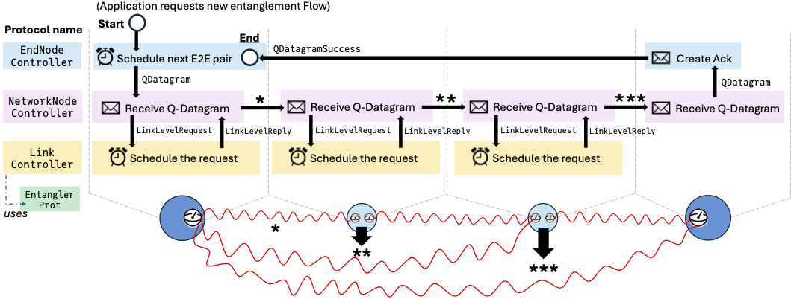

Standard Protocol Tags
Tags and queries are the usual way for independently written QuantumSavory processes to interact. A protocol publishes a classical fact as a tag or as a message, and another protocol queries for that fact when it needs a resource, an update, or a control-plane event.
Users are free and encouraged to define their own tags. A small symbolic tag is often the clearest choice for local control flow:
tag!(reg[1], :ready_for_my_protocol, 7)query(reg, :ready_for_my_protocol, W)The standard tags below are different: they are the shared vocabulary used by ProtocolZoo. Use them when a custom protocol should cooperate with existing zoo protocols such as EntanglerProt, SwapperProt, EntanglementTracker, CutoffProt, EntanglementConsumer, switch protocols, QTCP controllers, or MBQC purification protocols.
Custom Tags Versus Standard Tags
Use custom tags when the meaning is private to your protocol. Use standard tags when another protocol is expected to understand the metadata. This convention is what lets a custom component fit into an existing stack without directly calling the internals of another protocol.
Named tag heads used through the tag configuration field of EntanglerProt, EntanglementConsumer, QTCP LinkController, and others must be concrete subtypes of AbstractTag:
struct MyEntanglementTag <: AbstractTag endFor example, EntanglerProt marks generated links with EntanglementCounterpart. SwapperProt can then find such links by querying for that tag, and EntanglementTracker can keep the metadata coherent after a swap. A custom entangler can participate in the same stack by producing the same tag schema.
Typed tags are represented as Tag(TypeName, fields...). They can be attached to register slots with tag!, sent as messages with put!, and matched with query, queryall, or querydelete!.
Entanglement Metadata Interface
These tags are the main interface between the first-generation repeater protocols in ProtocolZoo.
EntanglementCounterpart
Tag(EntanglementCounterpart, remote_node, remote_slot, pair_id)Storage location: register slots.
Meaning: the local slot is entangled with remote_node.remote_slot, and the pair is identified by pair_id.
Protocol interface:
EntanglerProtproduces reciprocalEntanglementCounterparttags when it creates a Bell pair.SwapperProtconsumes two such tags at the swapping node and sends update messages to the former endpoints.EntanglementTrackerrewrites counterpart metadata after swap updates.CutoffProtqueries it before deleting stale pairs and sending deletion notices.EntanglementConsumerqueries reciprocal counterparts when it consumes an end-to-end pair.- Independently developed protocols like QTCP
LinkControllerconsume such pairs. The link controller treats exact reciprocal tags and their pair ID as authoritative; it does not inspect the simulator's quantum-state internals. SimpleSwitchDiscreteProtqueries it to find switch-client links that can be matched or deleted.
Typical query:
query(reg, EntanglementCounterpart, remote_node, W, W; assigned=true)query(slot, EntanglementCounterpart, remote_node, remote_slot, pair_id)If you create these tags manually, prefer a fresh id for a newly generated pair:
pair_id = fresh_entanglement_id()tag!(net[1][1], EntanglementCounterpart, 2, 1, pair_id)tag!(net[2][1], EntanglementCounterpart, 1, 1, pair_id)EntanglementHistory
Tag(EntanglementHistory, remote_node, remote_slot, swap_remote_node, swap_remote_slot, swapped_local, local_chunk_id, swapped_chunk_id)Storage location: register slots at nodes that performed swaps.
Meaning: the slot used to be entangled with remote_node.remote_slot, but was locally swapped with swapped_local, whose remote endpoint was swap_remote_node.swap_remote_slot.
Protocol interface:
SwapperProtcreates history tags after a swap.EntanglementTrackerconsumes or updates history tags when delayed update or delete messages arrive for a pair whose local metadata has already changed.
Typical query:
query(slot, EntanglementHistory, old_node, old_slot, W, W, W, W, W)EntanglementUpdateX And EntanglementUpdateZ
Tag(EntanglementUpdateX, target_pair_id, other_pair_id, past_local_node, past_local_slot, past_remote_slot, new_remote_node, new_remote_slot, correction)Tag(EntanglementUpdateZ, target_pair_id, other_pair_id, past_local_node, past_local_slot, past_remote_slot, new_remote_node, new_remote_slot, correction)Storage location: message buffers.
Meaning: a remote node performed a swap. The receiver should update the counterpart metadata for the target pair, combine in the other pair-id chunk, and apply the indicated Pauli-frame correction if needed.
correction is the raw Pauli measurement eigenvalue, 1 or -1. The receiver applies the correction gate when the value is -1.
Protocol interface:
SwapperProtsends these messages to the former endpoints of the two swapped links.EntanglementTrackerconsumes them and updates local counterpart/history metadata.- Custom protocols that perform their own swaps can use these tags to notify the standard tracker.
Typical query:
querydelete!(messagebuffer(net, node), EntanglementUpdateX, W, W, W, W, W, W, W, W)EntanglementDelete
Tag(EntanglementDelete, target_pair_id, send_node, send_slot, rec_node, rec_slot)Storage location: message buffers and, temporarily, register slots.
Meaning: one side of a pair has been deleted or decohered, and the other side must clear matching metadata and trace out the corresponding qubit.
Protocol interface:
CutoffProtsends deletion messages after it removes stale entanglement.EntanglementTrackerconsumes deletion messages and forwards or stores them when swaps have changed the endpoint metadata.SwapperProtand cleanup logic rely on this tag to avoid leaving stale counterpart information behind.
Typical query:
querydelete!(messagebuffer(net, node), EntanglementDelete, target_pair_id, W, W, node, W)Entanglement IDs
Some standard entanglement tags carry fields of type EntanglementID. These ids are not just display metadata. They are the identity of an entangled pair across swap, update, and delete events.
If a custom protocol manipulates EntanglementCounterpart, EntanglementHistory, EntanglementUpdateX, EntanglementUpdateZ, or EntanglementDelete, it must preserve the id semantics expected by EntanglerProt, SwapperProt, EntanglementTracker, CutoffProt, and EntanglementConsumer.
Use:
fresh_entanglement_id()for a newly generated physical pair.combine_entanglement_ids(id1, id2)when a swap combines pair-id chunks.NO_ENTANGLEMENT_IDonly for legacy/custom workflows that do not participate in pair-id-sensitive tracking.
QuantumSavory.ProtocolZoo.EntanglementID — Type
Integer-backed identifier used for entanglement-tracking bookkeeping.
QuantumSavory.ProtocolZoo.fresh_entanglement_id — Function
Generate a random nonzero entanglement ID.
QuantumSavory.ProtocolZoo.combine_entanglement_ids — Function
Combine two entanglement IDs into a new one.
The combiner is modular addition over the nonnegative Int range. It is commutative, associative, and has NO_ENTANGLEMENT_ID as its identity element. i.e. combine_entanglement_ids(a, b) == combine_entanglement_ids(b, a) and combine_entanglement_ids(a, combine_entanglement_ids(b, c)) == combine_entanglement_ids(combine_entanglement_ids(a, b), c). It is not a cryptographic hash and assumes randomly generated IDs, not adversarial inputs. Two nonzero IDs can combine to NO_ENTANGLEMENT_ID with negligible probability; this is accepted as an extremely unlikely sentinel collision.
Switch Interface
SwitchRequest
Tag(SwitchRequest, requester, remote_node)Storage location: switch node message buffers.
Meaning: requester asks the switch to establish entanglement with remote_node.
Protocol interface:
- Clients send this message to a switch node.
SimpleSwitchDiscreteProtconsumes these requests, updates its backlog, and attempts switch-mediated entanglement according to its assignment algorithm.
Typical query:
querydelete!(messagebuffer(net, switch_node), SwitchRequest, W, W)QTCP Interface
QTCP tags are subsystem-specific control-plane messages. They are standard within the QTCP controller stack and are useful when customizing QTCP behavior.

The figure summarizes the QTCP controller API: applications submit Flow requests to end-node controllers, end nodes create and acknowledge QDatagram messages, network-node controllers request hop-by-hop link resources, and link controllers answer with the link-level reply tags consumed by the higher layers.
Flow Requests And Endpoints
Tag(Flow, src, dst, npairs, uuid)Tag(QTCPPairBegin, flow_uuid, flow_src, flow_dst, seq_num, memory_slot, start_time)Tag(QTCPPairEnd, flow_uuid, flow_src, flow_dst, seq_num, memory_slot, start_time)Storage location: message buffers for Flow and the pair-completed notifications.
Protocol interface:
- Users or applications put
Flowat the source node to request end-to-end Bell pairs. EndNodeControllerconsumesFlow, createsQDatagrammessages, and emitsQTCPPairBeginorQTCPPairEndwhen a pair reaches the endpoints.- Custom end-node controllers can use the same tags to remain compatible with the rest of the QTCP stack.
Typical queries:
querydelete!(messagebuffer(net, src), Flow, src, W, W, W)query(messagebuffer(net, src), QTCPPairBegin, flow_uuid, W, W, W, W, W)query(messagebuffer(net, dst), QTCPPairEnd, flow_uuid, W, W, W, W, W)Datagram And Acknowledgement Messages
Tag(QDatagram, flow_uuid, flow_src, flow_dst, correction, seq_num, start_time)Tag(QDatagramSuccess, flow_uuid, seq_num, start_time)Storage location: message buffers.
Protocol interface:
EndNodeControllercreatesQDatagrammessages for each requested pair.NetworkNodeControllerroutes datagrams hop by hop and requests link-level entanglement for the next hop.- The destination
EndNodeControllerturns a received datagram intoQDatagramSuccess, which acknowledges completion back to the source.
Typical query:
querydelete!(messagebuffer(net, node), QDatagram, W, W, node, W, W, W)Link-Level QTCP Messages
Tag(LinkLevelRequest, flow_uuid, seq_num, remote_node)Tag(LinkLevelReply, flow_uuid, seq_num, memory_slot)Tag(LinkLevelReplyAtSource, flow_uuid, seq_num, memory_slot)Tag(LinkLevelReplyAtHop, flow_uuid, seq_num, memory_slot)Storage location: message buffers.
Protocol interface:
NetworkNodeControllerproducesLinkLevelRequestwhen a datagram needs entanglement to the next hop.LinkControllerconsumes requests and returnsLinkLevelReplyto the requester andLinkLevelReplyAtHopto the remote hop.- By default,
LinkController(tag=nothing, filo=nothing)generates one pair for each request. With a concretetag, it instead claims externally generated entanglement marked with the given tag. NetworkNodeControllerconverts replies into forwarded datagrams or source-side bookkeeping throughLinkLevelReplyAtSource.EndNodeControllerconsumes the source/hop replies when turning a completed datagram into endpoint pair notifications.
Typical queries:
querydelete!(messagebuffer(net, node), LinkLevelRequest, flow_uuid, seq_num, W)querydelete!(messagebuffer(net, node), LinkLevelReply, flow_uuid, seq_num, W)MBQC And Purification Interface
These tags are subsystem-specific metadata for graph-state construction and MBQC-based purification.
GraphStateStorage
Tag(GraphStateStorage, uuid, vertex)Storage location: storage-qubit register slots.
Protocol interface:
GraphStateConstructortags each storage qubit with the graph-state uuid and vertex it represents.- Follow-up graph-state or resource-state protocols can query this tag to find the physical storage slot for a logical graph vertex.
Typical query:
query(reg, GraphStateStorage, graph_uuid, vertex)PurifierBellMeasurementResults
Tag(PurifierBellMeasurementResults, node, measurements_XX, measurements_ZZ)Storage location: local register slots and message buffers.
Protocol interface:
PurifierBellMeasurementsproduces local bit-packed Bell-measurement results and sends them to the remote chief node.MBQCPurificationTrackerconsumes local and remote results, computes the purification syndrome, and either tags purified pairs or cleans up failed resources.
Typical query:
querydelete!(messagebuffer(net, chief), PurifierBellMeasurementResults, remote_chief, W, W)PurifiedEntanglementCounterpart
Tag(PurifiedEntanglementCounterpart, remote_node, remote_slot)Storage location: storage-qubit register slots.
Protocol interface:
MBQCPurificationTrackerproduces this tag when purification succeeds.- Custom consumers can query it to find purified Bell pairs without knowing the internal purification workflow.
Typical query:
query(reg, PurifiedEntanglementCounterpart, remote_node, W; assigned=true)Exact Type Reference
QuantumSavory.ProtocolZoo.EntanglementCounterpart — Type
struct EntanglementCounterpart <: AbstractTagIndicates the current entanglement status with a remote node's slot. Added when a new entanglement is generated through EntanglerProt or when a swap happens and the EntanglementTracker receives an [EntanglementUpdate] message.
remote_node::Int64: the id of the remote node to which we are entangledremote_slot::Int64: the slot in the remote node containing the qubit we are entangled topair_id::Int64: the identifier of the entangled pair
QuantumSavory.ProtocolZoo.EntanglementHistory — Type
struct EntanglementHistory <: AbstractTagThis tag is used to store the outdated entanglement information after a swap. It helps to direct incoming entanglement update messages to the right node after a swap. It helps in situations when locally we have performed a swap, but we are now receiving a message from a distant node that does not know yet that the swap has occurred (thus the distant node might have outdated information about who is entangled to whom and we need to update that information).
remote_node::Int64: the id of the remote node we used to be entangled toremote_slot::Int64: the slot of the remote node we used to be entangled toswap_remote_node::Int64: the id of remote node to which we are entangled after the swapswap_remote_slot::Int64: the slot of the remote node to which we are entangled after the swapswapped_local::Int64: the slot in this register with whom we performed a swaplocal_chunk_id::Int64: the pair-id chunk corresponding toremote_node.remote_slotswapped_chunk_id::Int64: the pair-id chunk corresponding toswap_remote_node.swap_remote_slot
QuantumSavory.ProtocolZoo.EntanglementUpdateX — Type
struct EntanglementUpdateX <: AbstractTagThis tag arrives as a message from a remote node to which the current node was entangled to update the entanglement information and apply an X correction after the remote node performs an entanglement swap.
target_pair_id::Int64: the pair id currently known by the receiver for the target slotother_pair_id::Int64: the pair-id chunk to combine into the target pairpast_local_node::Int64: the id of the node to which you were entangled before the swappast_local_slot::Int64: the slot of the node to which you were entangled before the swappast_remote_slot::Int64: the slot of your node that we were entangled tonew_remote_node::Int64: the id of the node to which you are now entangled after the swapnew_remote_slot::Int64: the slot of the node to which you are now entangled after the swapcorrection::Int64: what Pauli correction you need to perform
QuantumSavory.ProtocolZoo.EntanglementUpdateZ — Type
struct EntanglementUpdateZ <: AbstractTagThis tag arrives as a message from a remote node to which the current node was entangled to update the entanglement information and apply a Z correction after the remote node performs an entanglement swap.
target_pair_id::Int64: the pair id currently known by the receiver for the target slotother_pair_id::Int64: the pair-id chunk to combine into the target pairpast_local_node::Int64: the id of the node to which you were entangled before the swappast_local_slot::Int64: the slot of the node to which you were entangled before the swappast_remote_slot::Int64: the slot of your node that we were entangled tonew_remote_node::Int64: the id of the node to which you are now entangled after the swapnew_remote_slot::Int64: the slot of the node to which you are now entangled after the swapcorrection::Int64: what Pauli correction you need to perform
QuantumSavory.ProtocolZoo.EntanglementDelete — Type
struct EntanglementDelete <: AbstractTagThis tag arrives as a message from a remote node's Cutoff Protocol to which the current node was entangled, to update the classical metadata of the entangled slot and empty it. It is also stored at a node to handle incoming EntanglementUpdate and EntanglementDelete messages.
target_pair_id::Int64: the pair id targeted by this deletionsend_node::Int64: the node that sent the deletion announcement message after they delete their local qubitsend_slot::Int64: the sender's slot containing the decohered qubitrec_node::Int64: the node receiving the message for qubit deletionrec_slot::Int64: the slot containing decohered qubit
See also: CutoffProt
QuantumSavory.ProtocolZoo.Switches.SwitchRequest — Type
struct SwitchRequest <: AbstractTagNotify a switch that you request to be entangled with another node.
requester::Int64: the id of the node making the requestremote_node::Int64: the id of the remote node to which we want to be entangled
QuantumSavory.ProtocolZoo.QTCP.Flow — Type
struct Flow <: AbstractTagsrc::Int64: who initiates the request and also initiates the qdatagramsdst::Int64: the destination nodenpairs::Int64: the number of requested pairsuuid::Int64: the unique id of the flow
QuantumSavory.ProtocolZoo.QTCP.QTCPPairBegin — Type
struct QTCPPairBegin <: AbstractTagflow_uuid::Int64: the uuid of the flow we are generated forflow_src::Int64: who initiates the flow request and also initiates the qdatagramsflow_dst::Int64: the destination node for the flowseq_num::Int64: sequence number of the qdataframe in the given flowmemory_slot::Int64: the memory slot of the entangled qubitstart_time::Float64: original start time of the qdatagram
QuantumSavory.ProtocolZoo.QTCP.QTCPPairEnd — Type
struct QTCPPairEnd <: AbstractTagflow_uuid::Int64: the uuid of the flow we are generated forflow_src::Int64: who initiates the flow request and also initiates the qdatagramsflow_dst::Int64: the destination node for the flowseq_num::Int64: sequence number of the qdataframe in the given flowmemory_slot::Int64: the memory slot of the entangled qubitstart_time::Float64: original start time of the qdatagram
QuantumSavory.ProtocolZoo.QTCP.QDatagram — Type
struct QDatagram <: AbstractTagflow_uuid::Int64: the uuid of the flow we are generated forflow_src::Int64: who initiates the flow request and also initiates the qdatagramsflow_dst::Int64: the destination node for the flowcorrection::Int64: the Pauli frame correctionseq_num::Int64: sequence number of the qdataframe in the given flowstart_time::Float64: original start time of the qdatagram
QuantumSavory.ProtocolZoo.QTCP.QDatagramSuccess — Type
struct QDatagramSuccess <: AbstractTagflow_uuid::Int64: the uuid of the flow we are generated forseq_num::Int64: sequence number of the qdataframe in the given flowstart_time::Float64: time at which the qdatagram was generated by the flow source
QuantumSavory.ProtocolZoo.QTCP.LinkLevelRequest — Type
struct LinkLevelRequest <: AbstractTagflow_uuid::Int64: the uuid of the flow we are providing entanglement forseq_num::Int64: sequence number of the qdataframe we are providing entanglement forremote_node::Int64: the remote node with which we want to establish entanglement
QuantumSavory.ProtocolZoo.QTCP.LinkLevelReply — Type
struct LinkLevelReply <: AbstractTagflow_uuid::Int64: the uuid of the flow we are providing entanglement forseq_num::Int64: sequence number of the qdataframe we are providing entanglement formemory_slot::Int64: where is the entangled qubit stored
QuantumSavory.ProtocolZoo.QTCP.LinkLevelReplyAtSource — Type
struct LinkLevelReplyAtSource <: AbstractTagflow_uuid::Int64: the uuid of the flow we are providing entanglement forseq_num::Int64: sequence number of the qdataframe we are providing entanglement formemory_slot::Int64: where is the entangled qubit stored
QuantumSavory.ProtocolZoo.QTCP.LinkLevelReplyAtHop — Type
struct LinkLevelReplyAtHop <: AbstractTagflow_uuid::Int64: the uuid of the flow we are providing entanglement forseq_num::Int64: sequence number of the qdataframe we are providing entanglement formemory_slot::Int64: where is the entangled qubit stored
QuantumSavory.ProtocolZoo.MBQCEntanglementDistillation.GraphStateStorage — Type
struct GraphStateStorage <: AbstractTagTag identifying the graph-state UUID and logical vertex stored in a register slot by GraphStateConstructor.
uuid::Int64vertex::Int64
QuantumSavory.ProtocolZoo.MBQCEntanglementDistillation.PurifierBellMeasurementResults — Type
struct PurifierBellMeasurementResults <: AbstractTagMessage containing the results of Bell measurements performed during purification.
node::Int64: the node that performed the measurementsmeasurements_XX::Int64: bit-packed XX measurement resultsmeasurements_ZZ::Int64: bit-packed ZZ measurement results
QuantumSavory.ProtocolZoo.MBQCEntanglementDistillation.PurifiedEntanglementCounterpart — Type
struct PurifiedEntanglementCounterpart <: AbstractTagA tag indicating a purified entanglement with a remote node.
remote_node::Int64: the remote node we are entangled to after purificationremote_slot::Int64: the slot in the remote node
Where To Go Next
- Read Tagging and Querying for the generic tag and query API.
- Read Metadata and Protocol Composition for the design model behind protocol communication.
- Read Predefined Networking Protocols for the protocol implementations that produce and consume these tags.